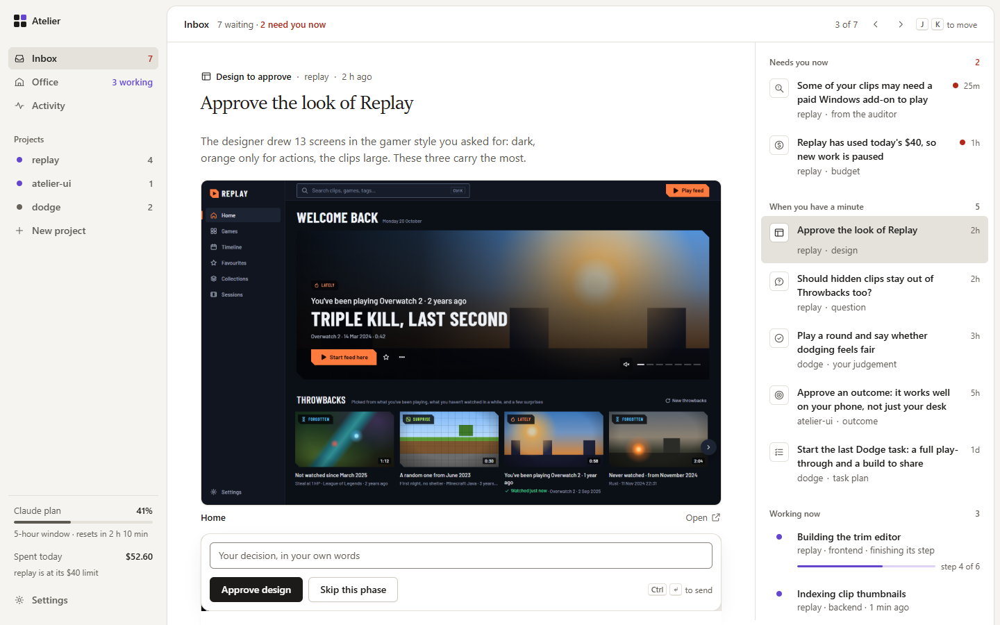
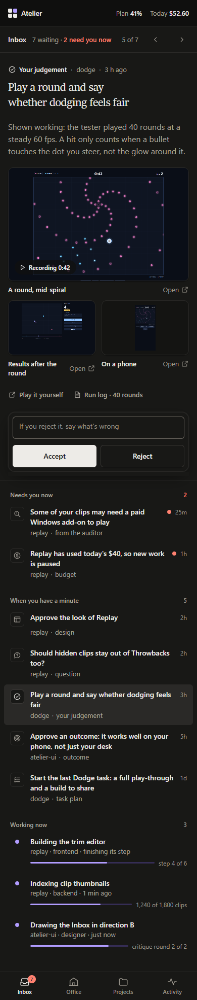
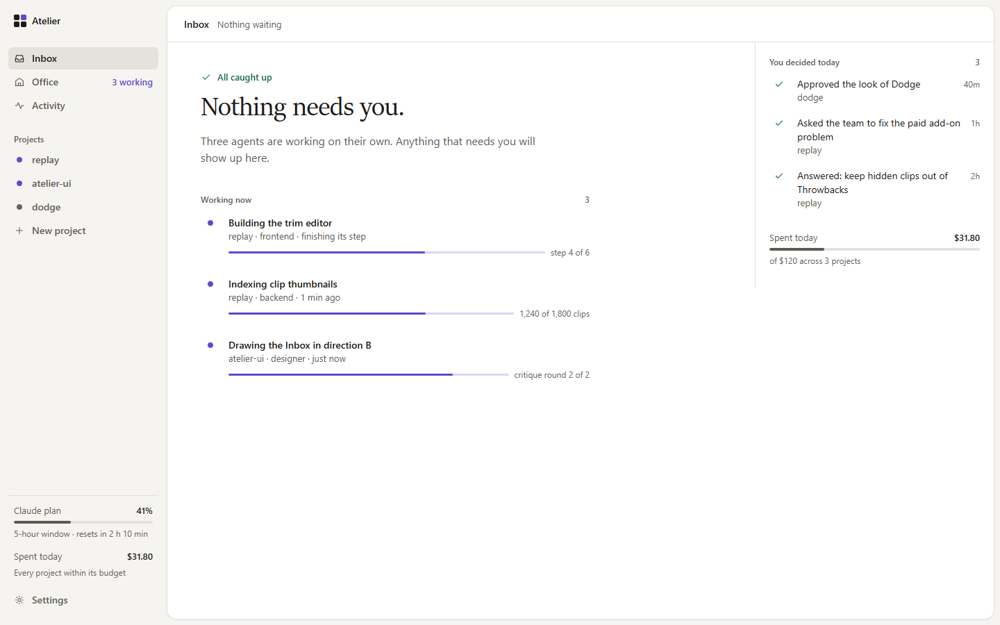

The Inbox, direction B
One decision at a time, the work shown large, the decision under your hand, the rest of the queue quiet beside it. Built from a written system: tokens, components in every state, then the screen.


